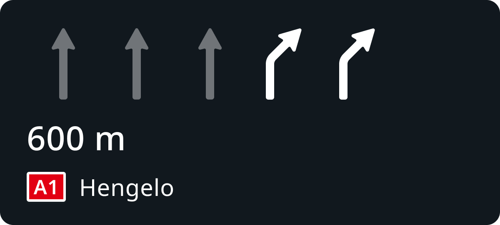
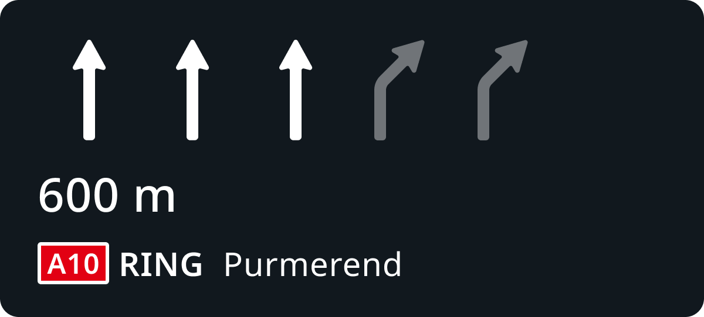
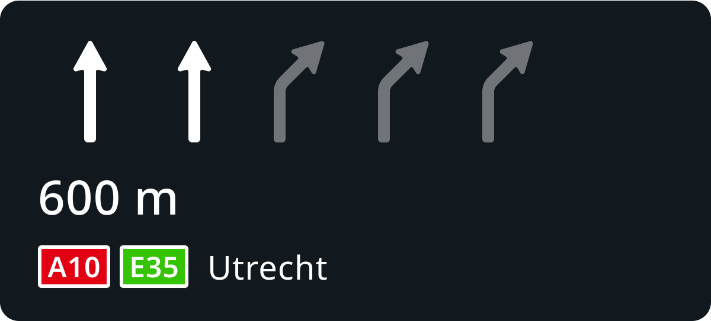

| Interaction Designer | Alexey Opokin |
|---|---|
| Visual Designer | Georgios Koultouridis |
| ENG OWNER | Vadym Khandus - please change this when another person is assigned |
| PM | Joost Pennings |
| Spec Review ticket | NAV-151482 |
| GitHub Documents | https://github.com/tomtom-internal/navigation-instruction-engine/blob/bc9915ebc23d1bdac3a34164aff5a3de260848ee/documentation/architecture/src/adr/2022-09-27T12%3A35%3A00%2B0200_natural_continuation/bifurcations.adoc |
[!NOTE] Changes requested
We've noticed that we have received many bug tickets from customers related to the natural continuation on bifurcations. It is not really clear to customers when and why our guidance decides not to provide bifurcation instructions in some cases.
The rules used to detect them are described in the source code documentation. However, we would like to refine these rules for a general audience and include them in this UX specification.
The purpose of this is to have a better visual and textual explanation of our guidance that we can share with customers, enabling us to provide a single screenshot to explain some cases to clients.
After the UX specification is improved, we may need to adjust it and add it to the HCP3 version of the spec.
furcations (Bifurcations) and Exits are two types of intersections which don't interrupt traffic flow. Both are found primarily on Motorways, but they can also be found on lower road classes that share some properties with Motorways, such as uninterrupted traffic flows and curved road geometry designed for fast manoeuvre taking. For differentiating furcations from Exits, refer to this pages: furcations Instructions (Bifurcations, Trifurcations, Exits)
TERMINOLOGY: Term furcation here and across the whole specifications is used interchangeably with term Bifurcation, however, keep in mind that furcations also include Trifurcations.
Bifurcation intersections design varies greatly depending on the complexity of the split. Here are some typical examples:
| furcation Type | Schematic diagram | Attributes | Notes |
|---|---|---|---|
| Main road continues |  |
Often, departing branch is indicated by exiting (angled) arrows Often, continuing branch is indicated by straight arrows. |
This type of bifurcation happens when one of outgoing branches has the same road identity (Road Name/Number) as the incoming path. Main road refers to the road that continues through the intersection. Departing road - is the road that appears as new at the intersection. Directional arrows indication is manifested in the signpost and/or on the surface of the road. This data might be or might be not available in the map. The ratio between straight lanes and departing lanes affects the audio lane guidance message. NOTE: Directional arrows might not be available for small lane count bifurcations. |
| Equal split |  |
Typically, both branches indicated by exiting (angled) arrows. | This type of bifurcation happens when both of outgoing branches have different road IDs from the incoming path. Directional arrows indication is manifested in the signpost and/or on the surface of the road. This data might be or might be not available in the map. NOTE: Directional arrows might not be available for small lane count bifurcations. |
NOTE: Those bifurcations are just given as examples. The real configurations could be different from those and cannot be categorised precisely.
When providing Guidance at furcation Intersections, we need to pay attention at lane configurations and intersection and roads identities before and after the intersection.
Bifurcations Instructions have following attributes:
1. Pointer At the furcation is used every time.
2. Actions: Keep Left/Right (AALG), or Use XX lanes (EALG). The choice between AALG (approximated audio lane guidance) and EALG (explicit audio lane guidance) is done based on the scenario.
3. Purpose could be ether Take the
Possible furcation scenarios are Illustrated in the table below:
| ID | Route path | Lane configuration | Pointer | Action | Purpose | Towards |
|---|---|---|---|---|---|---|
| 1 | Continuation of the current road A100 in the direction of Hamburg, while alternative branch is a new road. | At the furcation... | Keep Left to REASON: Approximated LG is used for continuation when majority of lanes follow the route path. |
Continue on A100 REASON: Continue is used for continuation on the same road. |
towards Hamburg | |
| 1.1 | Subset of #1 with different lane configuration | At the furcation... | Stay in the left two lanes to REASON: Explicit LG is used for continuation when minority of lanes follow the route path.NOTE: Use will be used instead of Stay in some scenarios when lane localisation is supported. |
Continue on A100 REASON: Continue is used for continuation on the same road. |
towardsHamburg | |
| 2 | Switching to a new road A9 in the direction of Berlin, while alternative branch is a continuation of the current road | At the furcation... | Use the right two lanes to REASON: Explicit LG is used for taking a new road |
takeA9 REASON: Take is used for taking a new road ALSO: Switch to to can be used instead of Take word take is already in use in the same sentence. |
towardsBerlin | |
| 2.1 | Subset of #2 with different lane configuration | At the furcation... | Keep Right to REASON: Count of lanes which is greater than 4 requires approximated LG |
takeA9 | towardsBerlin | |
| 3 | Switching to a new road A9 in the direction of Berlin, while alternative branch is also a new road road |  |
At the furcation... | Use the right two lanes to REASON: Explicit LG is used for taking a new road |
takeA9 | towardsBerlin |
| 3.1 | Subset of #3 with different lane configuration | At the furcation... | Use the left two lanes to REASON: Explicit LG is used for taking a new road |
takeA9 | towardsBerlin | |
| 4 | When only two lanes are available at the entrance of the furcation. | At the furcation... | Keep right to REASON: Approximated LG is used when there are only 2 lanes and choice needs to be made between them |
... | ... |
NOTE: Scenarios illustrated above describe standalone manoeuvre situations when no, close following manoeuvre is present. Situations involving serial manoeuvres apply MPO - manoeuvre path optimisation logic that might output different lane configurations. Details about MPO can be found here: Manoeuvre path optimisation
Bifurcation can vary by the lane directions configuration. This configuration is usually reflected by the directional arrows drawn on the road and indicated at the signpost. In most scenarios left branch on the bifurcation has straight arrows, while right has turning right ones. However, the geometry could also be different.
Directional lane configuration on the road
| Driver's View | Top View | Top View close up |
|---|---|---|
 |
 |
 |
This directional information should be reflected in the Manoeuvre arrow and SLG if this information could be gathered from the map:

| Phase | NIP | Notes |
|---|---|---|
| Early | Early instruction phase and earlier, do not display SLG, but only manoeuvre arrow. | |
| Main |  | Main instruction phase and later, display only SLG component without manoeuvre arrow. |
Following examples illustrate how Instructions involving furcation intersections are constructed.
furcations LOCATIONS
| ID | Map link |
|---|---|
| 1 | https://maps.app.goo.gl/KB231fY9tWfdfdpE9 |
| 2 | https://maps.app.goo.gl/ZxTafaFXaakUKkwDA |
| 3 | https://maps.app.goo.gl/xqQ8PRiE9bLE9zZj6 |
The left branch continues on RING A10, while the right branch takes a new road A9.
INTERSECTION GEOMETRY
| Driver's View | Top View | Top View close up |
|---|---|---|
|
|
|
MAIN INSTRUCTION
| Left Branch | Right Branch | |
|---|---|---|
| VISUAL |  | |
| AUDIO | In 600 meters, At the furcation, keep left to continue on A10 RING towards Purmerand | In 600 meters, At the furcation, use the right two lanes to take A1 towards Hengelo |
The left branch (2 lanes) continues on RING A10 Ring-Noord towards Utrecht, while the right branch (3 lanes) takes a new road A10 Ring-west towards Rotterdam.
| Driver's view | Top view | Top view close up |
|---|---|---|
 |
 |
 |
MAIN INSTRUCTION
| Left Branch | Right Branch | |
|---|---|---|
| VISUAL |  |  |
| AUDIO | In 600 meters, At the furcation, stay in the left two lanes to continue on A10, E35 towards Utrecht | In 600 meters, At the furcation, use the right three lanes to take E22 towards Rotterdam |
For even detailed, low level analysis of bifurcation detections, please refer to this document:
https://github.com/tomtom-internal/navigation-instruction-engine/blob/bc9915ebc23d1bdac3a34164aff5a3de260848ee/documentation/architecture/src/adr/2022-09-27T12%3A35%3A00%2B0200_natural_continuation/bifurcations.adoc
/ END OF DOCUMENT
=======================